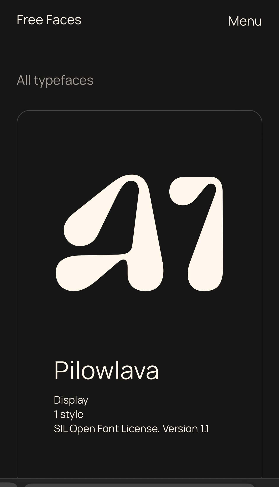

Visual Hierarchy
Tesla
tesla.comTesla is a great example of using visual hierarchy to guide visitor's attention and enhance user interaction. The use of a high quality image of a Tesla vehicle captures users attention immediately upon opening the web page, creating an inviting first impression. The use of appropriate headings and subheadings in varying font sizes and weights helps users quickly identify the main topics while also guiding users on how to navigate the content the webpage easily. The use of color contrast enhances readability while also giving emphasis to calls to action such as "Order Now" or "Demo Drive". Telsa demonstates visual hierarchy by combining strategic placement, typography and use of contrasting color to effectively communicate its brand message and help users easily navigate their website.
Rule of Thirds
Free Faces
Free Faces Website The typography website, Free Faces, is skillful at using the rule of thirds on their website. The design layout is divided into a grid of nine sections, which allows key elements to be positioned for optimal visual impact. By distributing text and visual elements, including typefaces and design sample information, within the rule of thirds, Free Faces creates a well-structured page while emphasizing an uncluttered environment giving each typeface its own space to be highlighted. Different font sizes and styles are displayed uniformally on the grid, emphasizing important information and making navigation easy to maneuver. Overall, Free Faces effectively uses the rule of thirds in its typography layout, creating a functional and aestically pleasing design that engages users and promotes easy navigation througout the site.
White Space
Quip
Quip WebsiteThe oral care product website Quip uses white space to create a clean design that helps to enhance a users experience. White space surrounds text and images adequately to prevent visual clutter making it easier to focus on key information or products. Quip's use of white space separates different sections of the site, including product information and product options. Well placed white spaces help users navigate the site easily and encourages interraction of the website including several calls to action to shop certain products. Readability is improved with ample space between text blocks, paragraphs and bullet points making the content easy to scan with key messages shown clearly. Ample white space also gives the site a more contemporary look that aligns with Quip's brand identity; clean and professional; this makes Quip's website both effective and attractive.